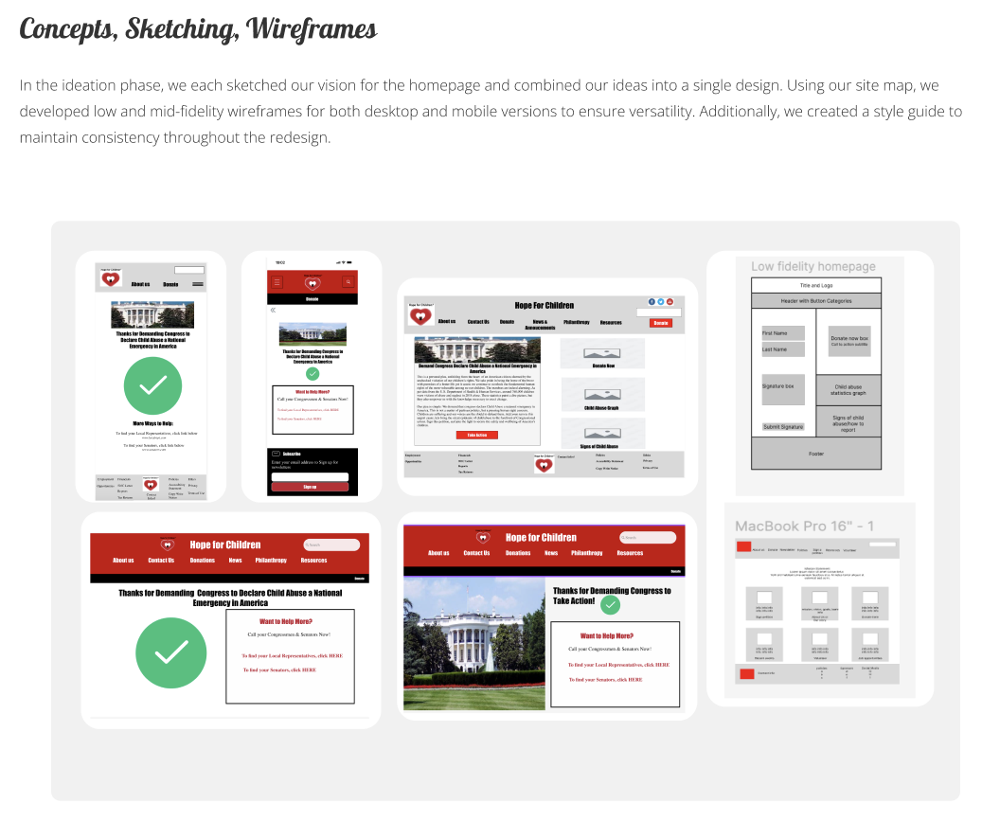

Project overview: Our team redesigned the website of a local nonprofit dedicated to raising awareness and combating child violence. We identified the need for a tangible call to action and aimed to help them incorporate this feature to engage Congress, increase awareness, boost donations, and enhance user engagement.
The Challenge
Hope for Children is a beacon of hope for vulnerable children within the United States and around the world. Their mission is bring awareness and action against child violence. Their website displayed awareness and training but little to no action items. Their recent goal was to find a way to engage the public in demanding congress declare child abuse a national emergency before leadership changes. As a team, we asked ourselves, how might we create a user- friendly interface with a simplified donation and petition-signing process on the Hope for Children website?

Goals
We sought to create a user-friendly interface with a simplified donation and petition-signing process on the Hope for Children website as this will allow greater awareness and increase the likelihood of users to engage and donate when these features are provided.
Goal 1- Redesign the homepage to bring their mission to the forefront
Goal 2- Restructure their main navigation menu to all for easier navigation throughout their website
Goal 3- Add a petition for users to sign that would allow the nonprofit tangible numbers of support to bring to congress.
Goal 4- Simplify their donation process to bring in more funds for the organization
Goal 5- Consolidate their secondary pages for contacting the organization so that it is more user friendly to conenct with the organization and the organization does not miss out on important connections.
Research Analysis
From the interviews, we gained insights into what users found most helpful and compiled the responses to create a user persona and empathy map. This information allowed us to develop a storyboard to visualize the user journey when visiting the website.


New York City
Some quick example text to build on the card title and make up the bulk of the card's content.
Go somewhere
Ideation Phase
Prototype
Feedback from our mid-fidelity stage testing indicated that users desired a more polished design, prompting us to re-evaluate our grid systems for a refined look. We were also advised to ensure our design aligned with the style guide we created to set the design tone. Additionally, we needed to further simplify the donation process and remove distracting buttons that did not support the main call to action.
Through this project, we learned how to conduct user interviews with stakeholders and clients to understand their website goals better. We brainstormed ways to create a smoother, more enjoyable user experience and successfully redesigned the homepage, simplifying the donation and contact processes. Additionally, we added a petition feature to generate real-life responses and actionable data for Congress. If we had more time, we could have further streamlined secondary navigation pages, redesigned the job opportunity pages, and created a more interactive design to encourage users to donate, sign the petition, and engage in free training courses the organization provides to increase public awareness. We are grateful for the opportunity to contribute to a local organization that is doing outstanding work.